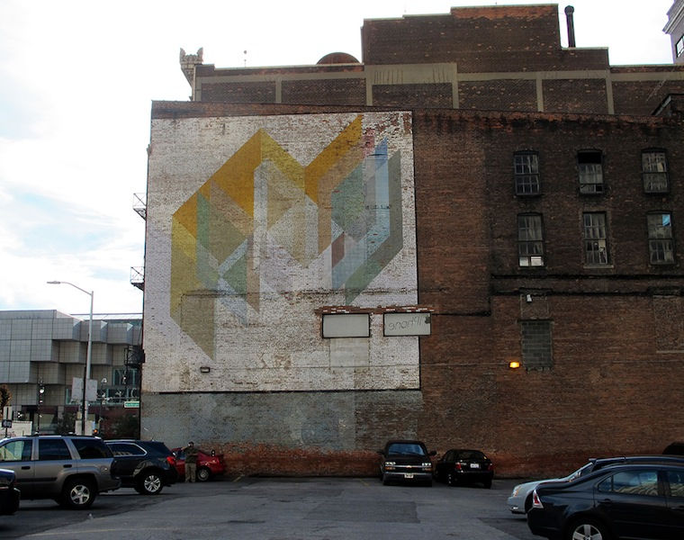

A friend of Rubello's since Rubello was 16, the Detroit artist and 2008 Kresge eminent artist, born 1919, co-directed New Detroit Inc.'s Living With Art Program in the early 1970s. His lost, 20' x 25' mural, painted on the side of a hair salon at Wyoming and Curtis in 1972, was the first work created under the auspices of Living With Art.5
His untitled downtown geometric mural (commissioned by New Detroit, Inc. in 1974 for an international energy conference), though compromised and fading, remains. See LIVING WITH ART and MURALS.
